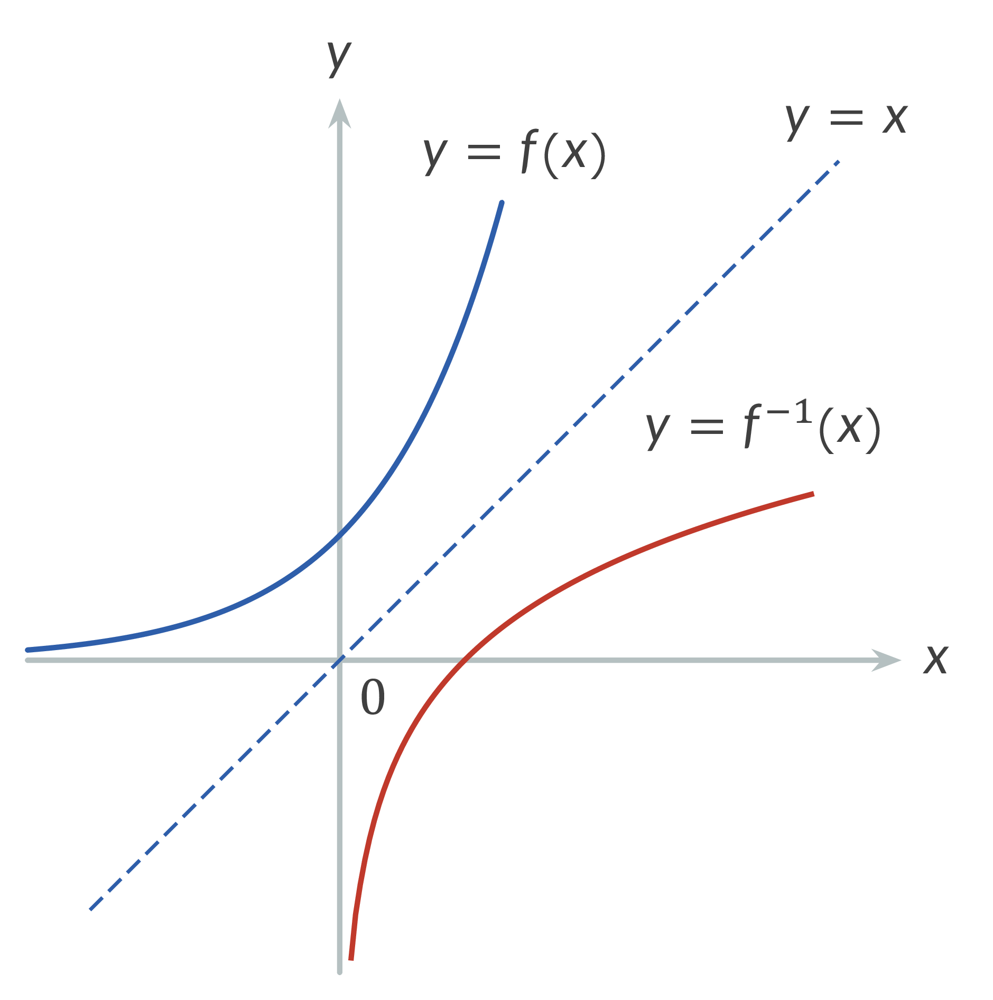
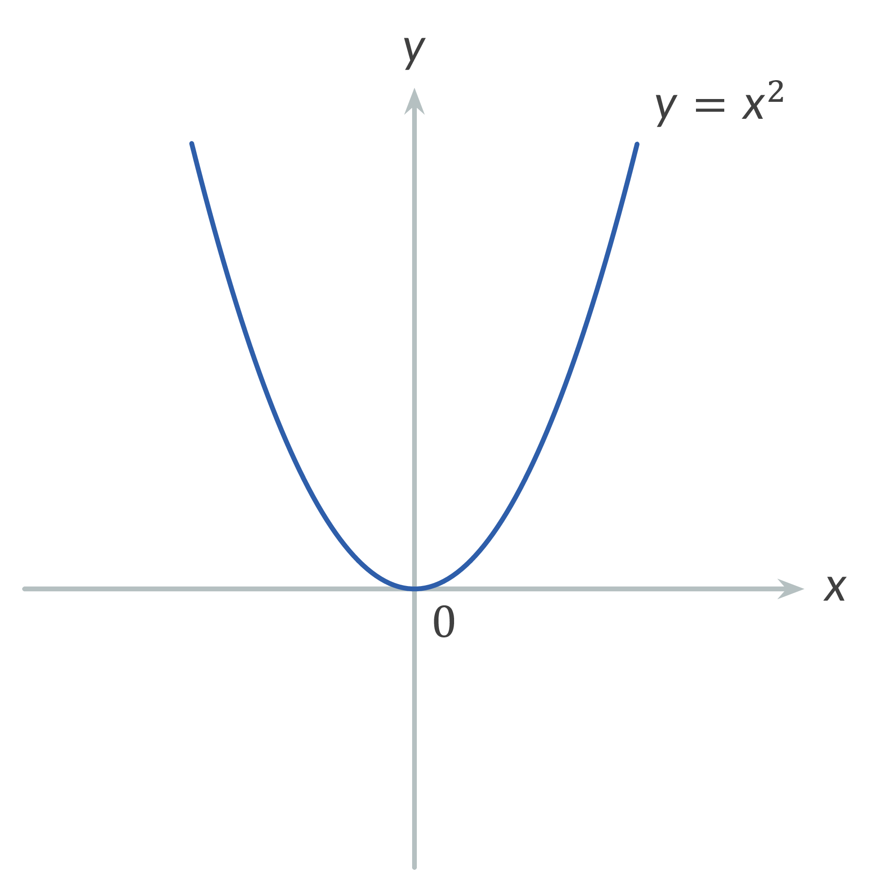
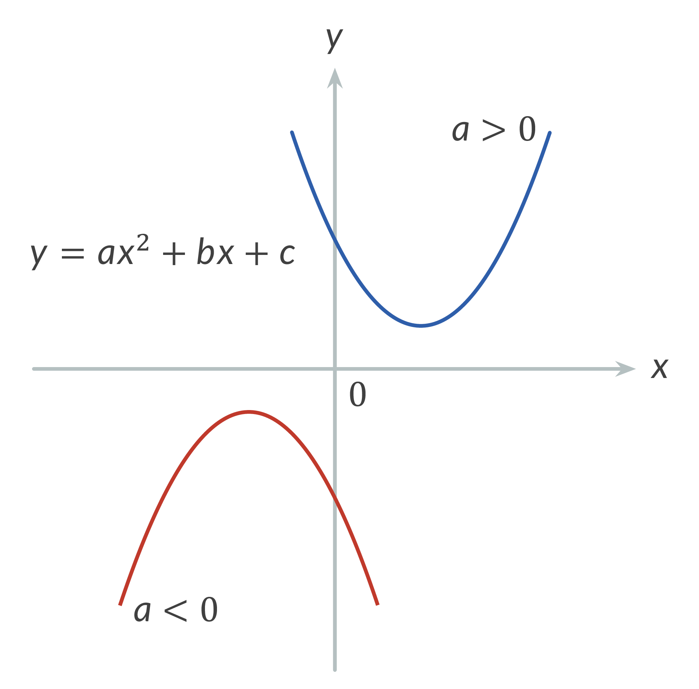
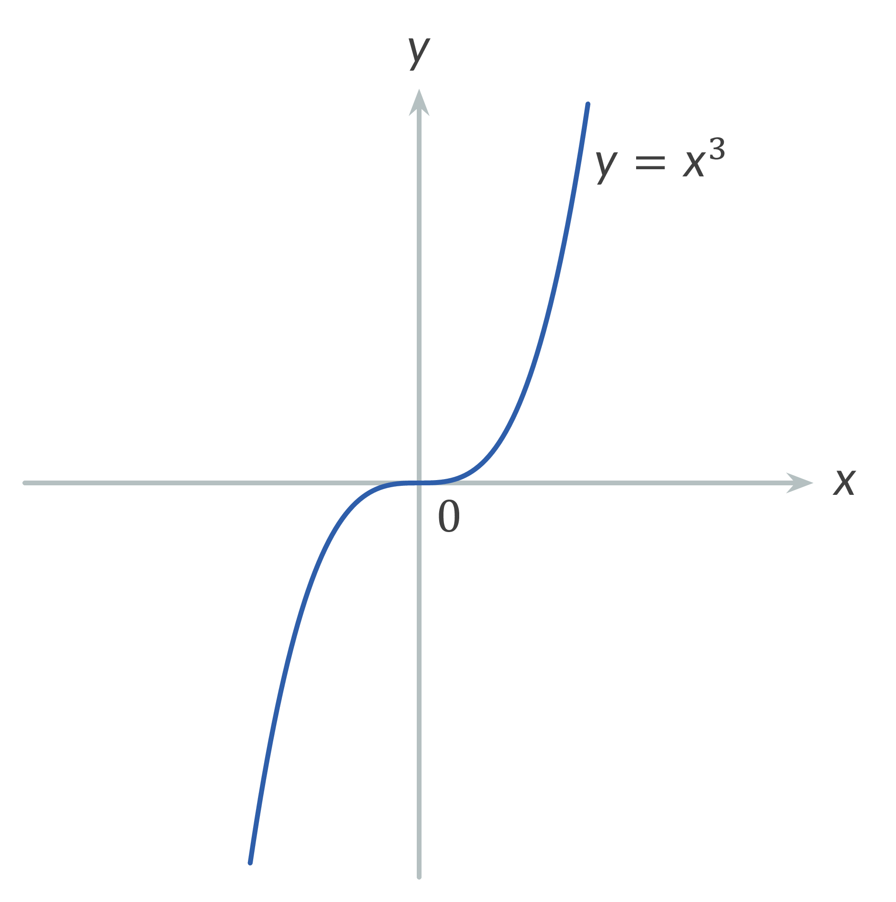
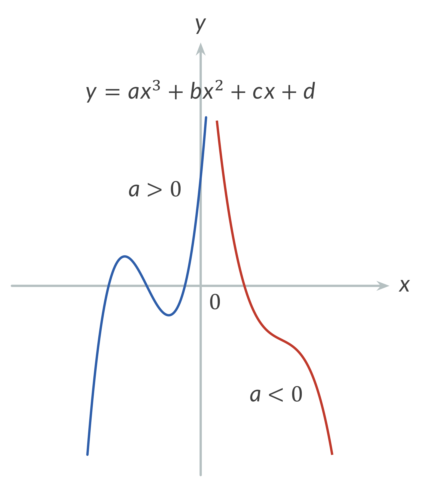
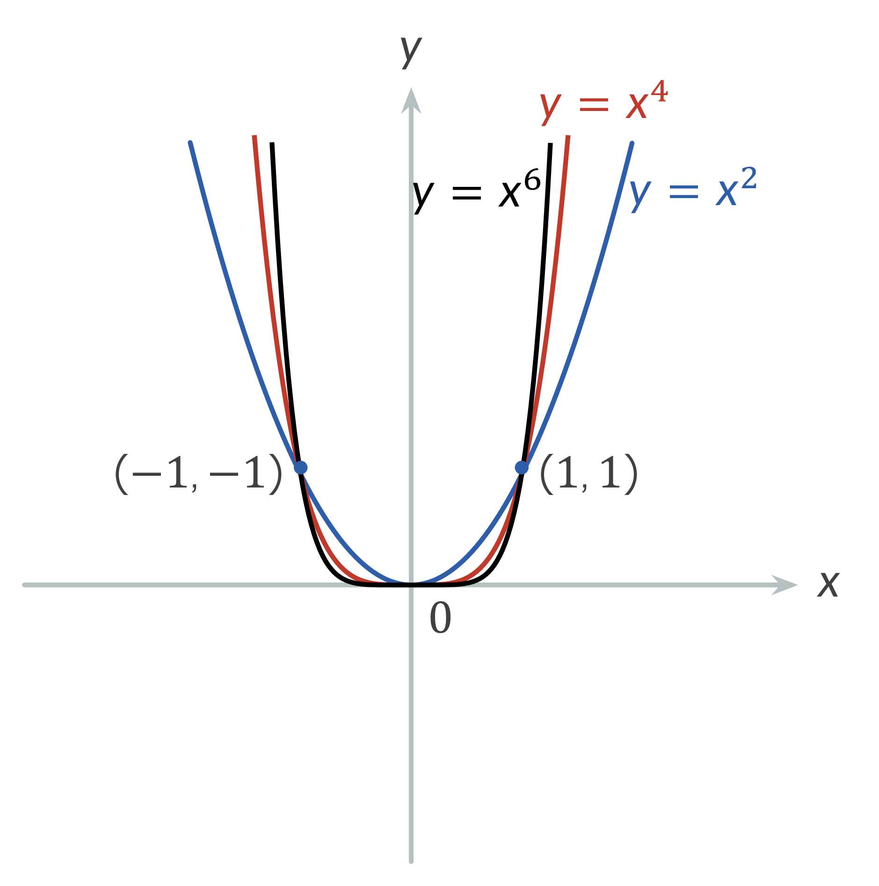
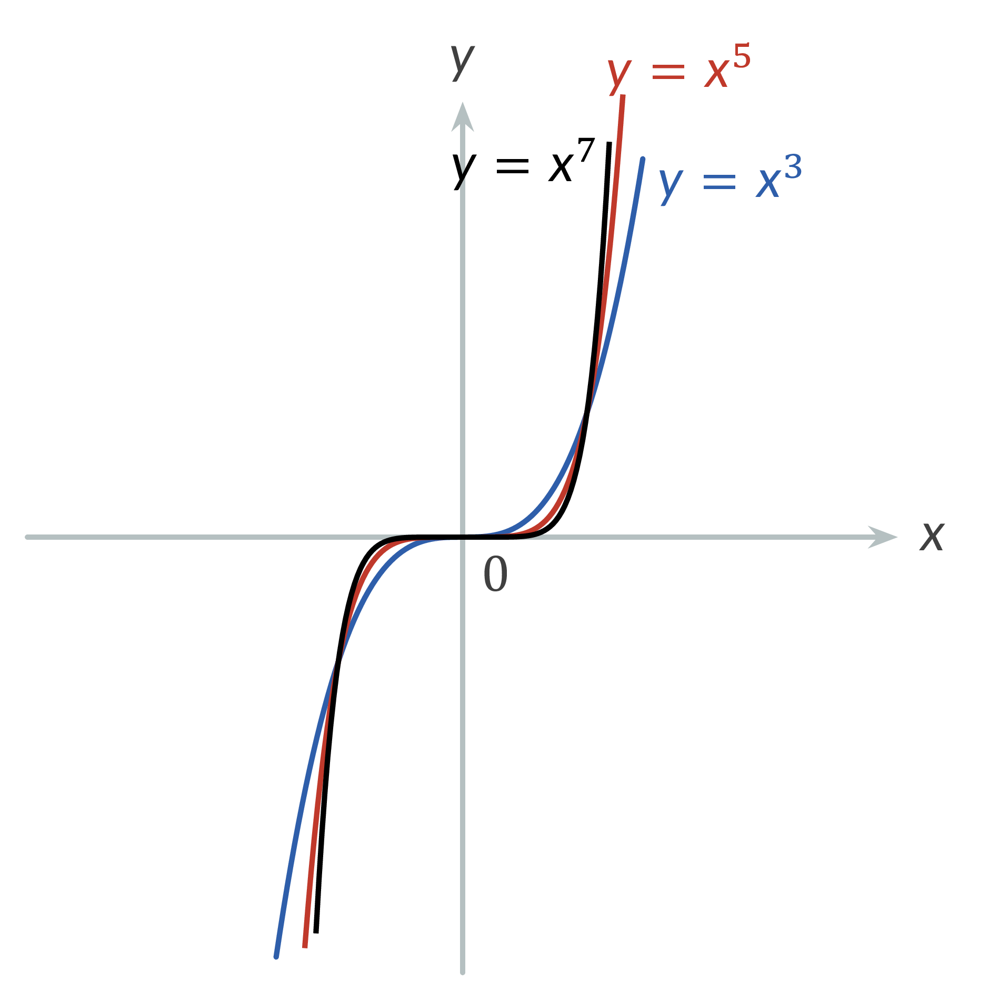
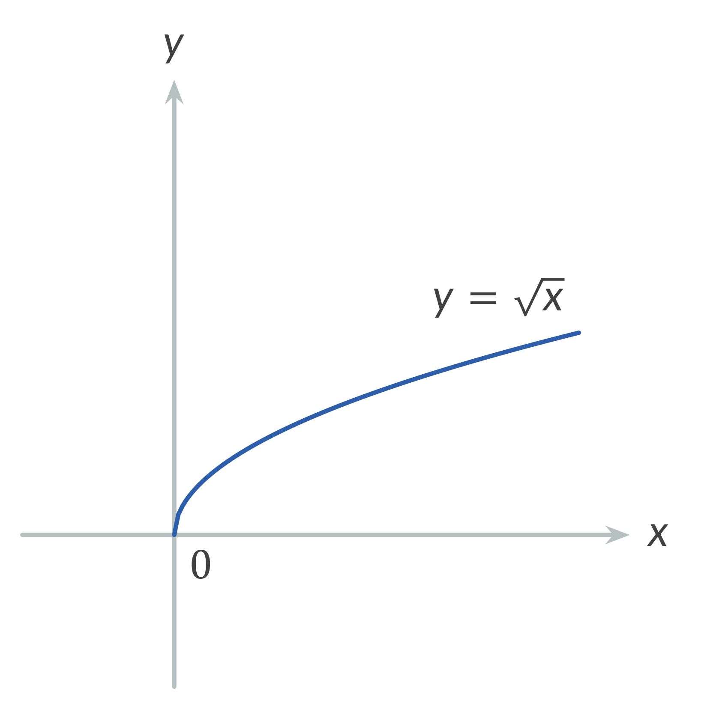
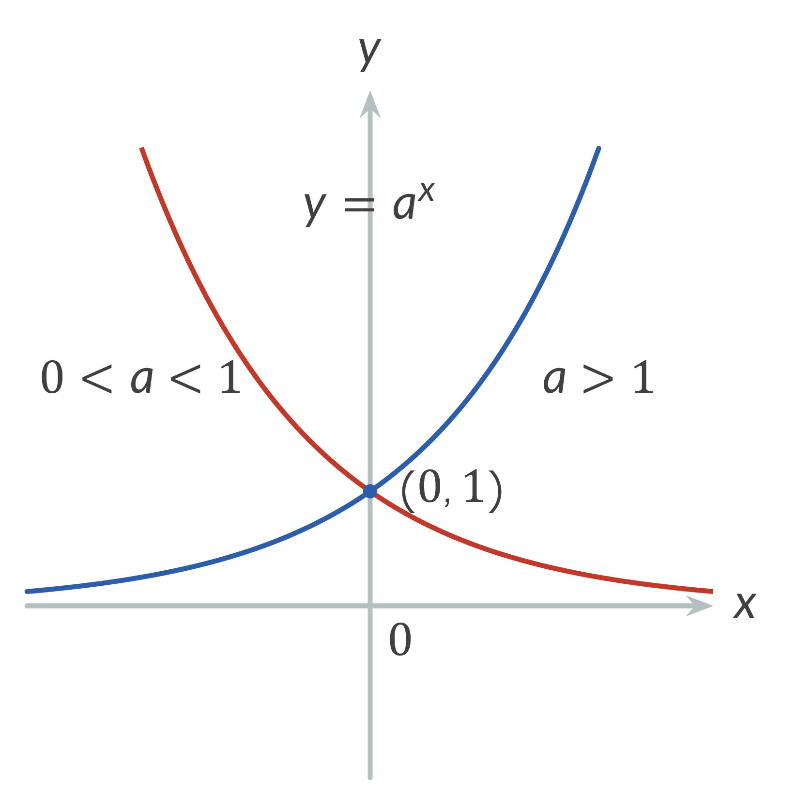

Functions: $f,g,y,u,v$
Argument (independent variable): $x$
Real numbers: $a,b,c,d$
Natural numbers: $n$
Angle: $\alpha$
Inverse function: $f^{-1}$
1. Even Function $$f(-x) = f(x)$$
2. Odd Function $$f(-x) = -f(x)$$
3. Periodic Function $$f(x + nT) = f(x)$$
4. Inverse Function
$y=f(x)$ is any function, $x=g(y)$ or $y=f^{-1}(x)$ is its inverse function.

5. Composite Function
$y=f(u)$, $u=g(x)$, $y=f(g(x))$ is a composite function.
6. Linear Function
$y = ax + b$, $x\in \mathbb{R}$, $a=\tan \alpha$ is the slope of the line, $b$ is the y-intercept.
7. Quadratic Function
$y = x^2$, $x\in \mathbb{R}$.

8. $y=ax^2+bx+c$, $x\in \mathbb{R}$.

9. Cubic Function
$y = x^3$, $x\in \mathbb{R}$.

10. $y=ax^3+bx^2+cx+d$, $x\in \mathbb{R}$.

11. Power Function
$y = x^n$, $n\in \mathbb{N}$.


12. Square Root Function
$y = \sqrt{x}$, $x \in [0, \infty)$.

13. Exponential Function
$y = a^x$, $a > 0$, $a \neq 1$,
$y = e^x$, if $a=e$, $e=2.71828182846... $

14. Logarithmic Function
$y = \log_a x$, $x \in (0, \infty)$, $a > 0$, $a \neq 1$,
$y = \ln x$, if $a=e$, $x \gt 0$.

15. Hyperbolic Sine Function
$y = \sinh x$, $\sinh x=\frac{e^x-e^{-x}}{2}$, $x\in \mathbb{R}$.

16. Hyperbolic Cosine Function
$y = \cosh x$, $\cosh x=\frac{e^x+e^{-x}}{2}$, $x\in \mathbb{R}$.

17. Hyperbolic Tangent Function
$y = \tanh x$, $\tanh x=\frac{\sinh x}{\cosh x}=\frac{e^x-e^{-x}}{e^x+e^{-x}}$, $x\in \mathbb{R}$.

18. Hyperbolic Cotangent Function
$y = \coth x$, $\coth x=\frac{\cosh x}{\sinh x}=\frac{e^x+e^{-x}}{e^x-e^{-x}}$, $x\in \mathbb{R}$.

19. Hyperbolic Secant Function
$y = \sech x$, $\sech x=\frac{1}{\cosh x}=\frac{2}{e^x+e^{-x}}$, $x\in \mathbb{R}$.

20. Hyperbolic Cosecant Function
$y = \csch x$, $y=\csch x=\frac{1}{\sinh x}=\frac{2}{e^x-e^{-x}}$, $x\in \mathbb{R}$, $x \neq 0$.

21. Inverse Hyperbolic Sine Function
$y = \arcsinh x$, $x\in \mathbb{R}$.

22. Inverse Hyperbolic Cosine Function
$y = \arccosh x$, $x \in [1, \infty)$.

23. Inverse Hyperbolic Tangent Function
$y = \arctanh x$, $x \in (-1, 1)$.

24. Inverse Hyperbolic Cotangent Function
$y = \arccoth x$, $x \in (-\infty, -1) \cup (1, \infty)$.

25. Inverse Hyperbolic Secant Function
$y = \arcsech x$, $x \in (0, 1]$.

26. Inverse Hyperbolic Cosecant Function
$y = \arccsch x$, $x \in \mathbb{R}$, $x \neq 0$.